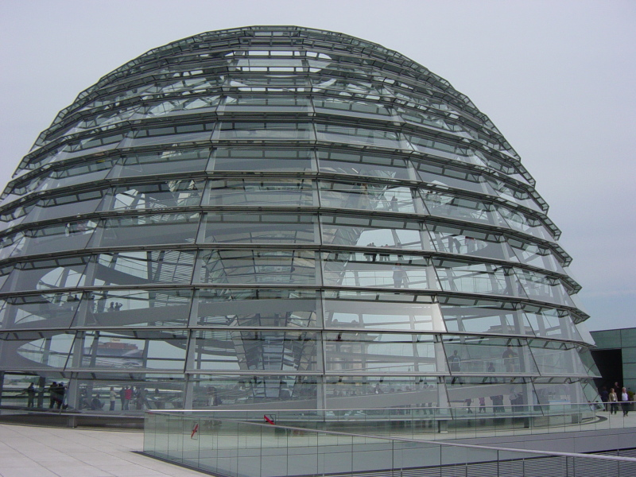

Deluxe sleeper cabin on our train to Berlin is as described and includes a shower and toilet and bunk beds. Wake up call at 07:00 includes coffee and breakfast (roll,croisant and juice). Sat back and enjoyed the scenery roll by. Saw some deer and also a springer spaniel chasing the train. Train arrives Berlin hbf about 08:20. Hbf is impressive. Paid €0.80 to use ultra clean toilet. Bought a day ticket for €6.20 then walked 1100m to Reichstag. Joined queue 09:30am. Got in finally at about 11:00am. Walked to top of dome (designed by Norman Foster). Walked to Brandonburg Gate. Had a currywurst, chips and coffee from a roadside hut for €5.40. Walked/metro’d to Checkpoint Charlie. Then metro’d to Oranien-burger Tor and trekked to Kuchi where I had a strawberry calpico, red snapper and sushi. Total bill inc tip €30.
Took train to warschaemer st to see East Side Gallery, the remaining 1.3km section of the Berlin wall that is now covered in graffiti art.
Took metro/trains to hbf to pick up luggage and then to Savignyplatz and walked to our hotel (Imperial Hotel) to check in.
Took train to Hackescher Markt for food in evening. Went in Rocco. Nice location and meal was cheap at €24 for two mains and two drinks but won’t win any medals for the food or service. Back along Savignyplatz had a hot chocolate with cream and apfelstrudel with custard, Yamini had coffee and ice cream. This came to €10.50. Could live down this street!
{kind=link}